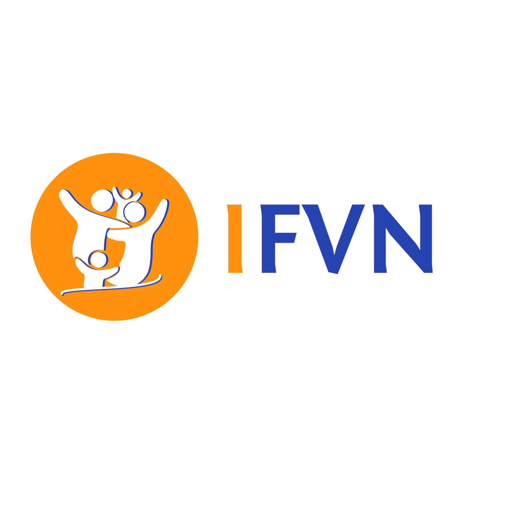

<!DOCTYPE html>
<html lang="pt-BR">

<head>
  <meta charset="UTF-8">
  <meta name="viewport" content="width=device-width, initial-scale=1.0">
  <title>Comunidade Vida Nova</title>
  <link rel="preconnect" href="https://fonts.gstatic.com">
  <link
    href="https://fonts.googleapis.com/css2?family=Montserrat:wght@900&family=Open+Sans:ital,wght@0,400;0,700;1,400&display=swap"
    rel="stylesheet">
  <link rel="stylesheet" href="assets/css/variables.css">
  <link rel="stylesheet" href="assets/css/elements.css">
  <link rel="stylesheet" href="assets/css/classes.css">
  <link rel="stylesheet" href="assets/css/menu.css">
  <link rel="stylesheet" href="assets/css/styles.css">
  <link rel="icon" type="image/png" href="assets/img/logo_fundo.png">
</head>

<body>

  <input id="close-menu" class="close-menu" type="checkbox" aria-label="Close menu" role="button">
  <label class="close-menu-label" for="close-menu" title="close menu"></label>
  <aside class="menu white-bg">
    <div class="main-content menu-content">
      <h1 onclick="getElementById('close-menu').checked = false;">
        <div class="logo">
          <a href="#home"></a>
        </div>
      </h1>
      

      <nav>
        <ul onclick="getElementById('close-menu').checked = false;">
          <li><a href="#home">Inicio</a></li>
          <li><a href="#intro">Quem Somos</a></li>
          <li><a href="#grid-one">Movimentos</a></li>
          <li><a href="#gallery">Midias</a></li>
          <li><a href="#grid-two">Instituto</a></li>
          <li><a href="#pricing">Contribuições</a></li>
          <li><a href="#contact">Contato</a></li>
        </ul>
      </nav>

      
        
      
    </nav>
  </aside>


  <section id="home" class="intro image-bg section">
    <div class="main-content ">

      <div class="back-to-end">
        <p>Siga-nos nas redes sociais</p>
        <a  href="https://www.instagram.com/familiavidanovabrasil/"></a>
        <a href="https://www.facebook.com/familiavidanovabrasil"></a>
        <a href="https://www.youtube.com/@familiavidanovabrasil" ></a>
        <a href="https://wa.me/55XXXXXXXXXXX" ></a>
      
      </div> 
    </div>
  </section>


  <section id="intro" class="white-bg section">
    <div class="main-content ">


      <div class="intro-text-content">
        
        <h2>Quem Somos</h2>
        <h3>Nossa História</h3>
        <p>A Comunidade Vida Nova nasceu em dezembro de 2001, em São Paulo, no bairro de Interlagos na casa dos pastores Celso e Vera Lúcia Guidelli.
          Por mais de vinte anos, foram membros de uma igreja denominacional na região sul de São Paulo. Em 1997, o Senhor começou a incomodá-los sobre
          a necessidade de uma nova visão de ministério. Mas foi em 2000 que ocorreu o desligamento espiritual da igreja onde cresceram. 
          Cerca de um ano depois, começaram, de forma simples e modesta, a Comunidade Vida Nova, com exatamente nove vidas.
        </p>
        <p>
          Com seis meses de trabalho, e já com aproximadamente vinte e cinco vidas na comunidade, percebeu-se que seria necessário conseguir um local 
          para os cultos, pois o espaço da sala de estar dos pastores já não era suficiente. Foi dado um grande passo de fé e ousadia, e, dois meses 
          após a assinatura do contrato de locação, foi inaugurada a primeira sede da Comunidade Vida Nova.
        </p>
        <p>
          Depois de trinta meses, estavam diante de um novo desafio: era preciso conseguir um lugar ainda maior. 
          A igreja havia crescido – já tinha em torno de sessenta vidas na comunidade. Era preciso dar seguimento à visão e aos sonhos do Senhor.
        </p>
        <p>Em setembro de 2004, um novo imóvel foi alugado, com capacidade para 150 pessoas. Durante três anos neste local o crescimento foi inevitável, 
          e em 2007 foi decidido que a Comunidade Vida Nova deveria procurar outro imóvel, que fosse bem maior e com maior estrutura. Foi alugado no bairro 
          da Vila Marcelo região de Parelheiros, com aproximadamente oito mil metros quadrados de espaço, com dois galpões. Desde então, a Comunidade tem vivido 
          grandes conquistas de Deus neste lugar.
        </p>
        <p>Comunidade Vida Nova <br>
          Somos uma Grande Família de Cristo
        </p>

        <br>

        <h3>Nossa Missão</h3>

        <p>Cumprir a grande comissão de Jesus dada à Sua igreja (Mateus 28:19 - 20), contando para isto com a participação ativa de cada membro comprometido com esta igreja (Efésios 4:16).</p>
        

       <h3>Nossa visão e propósito</h3>

      <p><strong> Somos uma igreja em células que existe para levar você e sua família a um encontro com Deus e estender o seu reino em nossa cidade e no mundo. </strong></p>

      <p>
        <strong>Somos uma grande família de Cristo onde, priorizamos a “COMUNHÃO – PATERNIDADE E PROTEÇÃO”. </strong> Uma grande família em amor, 
          que existe para alcançar pessoas que não conhecem a Cristo, e transformá-las em seus verdadeiros discípulos e adoradores.
      </p>

      <p>Para isso contamos com a seguinte estratégia (Ganhar – Integrar – Treinar – Enviar)</p>

      <h6>Ganhar (Alcançar)</h6>

      <p>Resgatando vidas para o reino de Deus.</p>

      <p>Nossa missão como Igreja é compartilhar as boas novas àqueles que não conhecem a Cristo por meio de evangelismo pessoal, reuniões de celebração, Células, 
        eventos de colheita, acampamentos e, em alguns casos, por transferências de outras igrejas.
      </p>

      <p>“O qual deseja que todos os homens sejam salvos e cheguem ao pleno conhecimento da verdade” 1 Timóteo 2.4</p>

      <h6>Integrar (Consolidar)</h6>

      <p>Estabelecendo pessoas comprometidas no grande corpo de Cristo</p>

      <p>Cremos que este passo é primordial para o pastoreamento e acontece por meio de duas ações práticas: 
        conclusão da Classe de Integração e participação de uma célula. Estas etapas também são essenciais para aqueles que desejam envolver-se com a liderança e ministérios.
      </p>

      <p>“Plantados na Casa do Senhor, florescerão nos átrios do nosso Deus”. Salmos 92: 13</p>

      <h6>Treinar (Capacitar)</h6>

      <p>Equipando os membros para o ministério</p>

      <p>Depois que a pessoa está sólida em seu relacionamento com Deus e integrada à comunidade, passam a ser capacitadas e equipadas para o ministério, 
        como servos fiéis. A base será o ensino da palavra de Deus, cursos oficiais e, uma séria de ferramentas de capacitação oferecidas na Igreja Local.</p>


      <p>“E o que de minha parte ouviste, através de muitas testemunhas, isso mesmo transmite a homens fiéis e também idôneos, para instruir a outros”. 2 Timóteo 2: 2</p>
    


      <h6>Enviar (Servir)</h6>

      <p>Estendendo o Reino de Deus em nossa comunidade, cidade e em outros lugares.</p>

      <p>Este é o propósito pelo qual nós existimos como Igreja, pois cremos que cada membro é chamado a servir o Corpo de Cristo e o mundo com seus dons e talentos. 
        Desde os ministérios de apoio até a liderança das Células, cada membro, após ser treinado, poderá escolher qual ministério deseja participar.</p>

      <p>“E como pregarão se não forem enviados? Como está escrito: Quão formosos são os pés dos que anunciam cousas boas” Romanos 10.15</p>


      <h6>NO QUE CREMOS</h6>
      <p><strong>1. Nós cremos na inspiração plena e total da Bíblia</strong></p>
      <p>Cremos que ela é a única palavra infalível de Deus e a autoridade máxima e suprema em todos os assuntos de fé e conduta (2 Tm 3:16,17; 1 Co 2:13; 1 Pe 1:24,25; 2 Pe 1:20,21).</p>

      <p><strong>2. Nós cremos na Divindade Eterna…</strong></p>
      <p>… que se revelou como um Deus que existe em três pessoas: o Pai, o Filho e o Espírito Santo. Os três formam a Trindade, e são distinguíveis entre si, mas indivisíveis (Gn 1:26; Mt 28:19; Jo 4:24; 10:30; 2 Co 13:13; 1 Jo 5:7).
      </p>
      
      <p><strong>3. Nós cremos que o pecado entrou no universo…</strong></p>
      <p>… através de Satanás e depois na raça humana com a queda de Adão e Eva. Após este fato, toda a humanidade herdou a mesma natureza pecaminosa e carece da obra expiatória de Cristo na cruz (Sl 51:5; Rm 3:23,24; 5:12,18).
      </p>
      <p><strong>4. Nós cremos que o plano da redenção foi iniciado pelo próprio Deus…
      </strong></p>
      <p>… ao oferecer seu único Filho em sacrifício pelo nosso pecado e concluído na cruz do calvário, quando Jesus entregou-se espontaneamente para morrer em favor da humanidade (Jo 3.16; 1 Jo 3.16).
      </p>

      <p><strong>5. Nós cremos que o Senhor Jesus Cristo, concebido pelo Espírito Santo…
      </strong></p>
      <p>… e nascido da virgem Maria, foi plenamente Deus e plenamente homem, e é o único Salvador dos homens (Is 7.14; 9.6; Mt 1.18-20; Lc 1.26-35; Jo 1.1-4,14; 14.6; Fl 2.6,7).
      </p>

      <p><strong>6. Nós cremos que Jesus Cristo…
      </strong></p>
      <p>… morreu pelos nossos pecados, foi sepultado e ressuscitou ao 3º dia (At 1.10,11; Rm 4.25) permanecendo com seus discípulos por 40 dias, após o que foi elevado aos céus, exaltado à destra de Deus e retornará corporalmente em sua 2ª vinda (Mt 24.30; Jo 14.2-3; 1 Ts 4.13-18).
      </p>

      <p><strong>7. Nós cremos na remissão de pecados…
      </strong></p>
      <p>… e salvação do homem pela graça de Deus, a qual não é o resultado do esforço humano ou de “boas obras” (Ef 2.8-9; Hb 9.12; Rm 5.11).
      </p>

      <p><strong>8. Nós cremos que a responsabilidade…
      </strong></p>
      <p>… pessoal do homem é, por seu próprio livre arbítrio, arrepender-se dos seus pecados e invocar o Nome do Senhor Jesus Cristo, exercendo fé em sua morte, sepultamento e ressurreição, para assim receber a salvação (At 2.38; 3.19; Jo 3.3; Rm 10.9-13).
      </p>

      <p><strong>9. Nós cremos na necessidade do batismo nas águas…
      </strong></p>
      <p>… por imersão de todo aquele que nascer de novo, no nome da Divindade Eterna, para cumprir a ordem de Cristo (Mt 28.19; At 2.36-39; 19.1-6; Mc 16.16; Rm 6.3-11).
      </p>

      <p><strong>10. Nós cremos no batismo com o Espírito Santo…
      </strong></p>
      <p>… como uma experiência subsequente à salvação e estendida a todos os cristãos, com a evidência bíblica do falar em outras línguas, conforme concedido pelo Espírito Santo (At 1.8; 2.1-4; 8.14-17; 10.44-46; Gl 3.14-15).
      </p>

      <p><strong>11. Nós cremos na operação dos dons do Espírito…
      </strong></p>
      <p>… em nossos dias, conforme enumerados em 1 Coríntios, capítulos 12, 13 e 14, e manifestados na Igreja Primitiva em todo o livro de Atos.
      </p>
      
      <p><strong>12. Nós cremos em uma vida cheia do Espírito…
      </strong></p>
      <p>… que leva o homem a viver em santidade e temor do Senhor, permitindo assim que o caráter de Cristo seja nele moldado (Ef 5.18; 2 Co 6.14; 7.1; 1 Pe 1.14-16).
      </p>

      <p><strong>13. Nós cremos na cura de enfermidades ou cura divina…
      </strong></p>
      <p>… em seus aspectos variados, como a praticada no ministério de Jesus e nos dias da Igreja Primitiva (Mt 8.16,17; Mc 16.17,18; At 4.30; Rm 8.11; 1 Co 12.9; Tg 5.14).
      </p>
      
      <p><strong>14. Nós cremos na mesa do Senhor…
      </strong></p>
      <p>… comumente chamada “Comunhão” ou a “Ceia do Senhor”, para os crentes (Lc 22.14-20; 1 Co 11.23-26).
      </p>

      <p><strong>15. Nós cremos que o casamento entre um homem e uma mulher…
      </strong></p>
      <p>… é uma instituição estabelecida pelo próprio Deus no jardim do Éden antes mesmo do pecado de Adão, e que tal relação é por Ele estabelecida “para toda a vida” (Gn 2.18-25; Pv 18.22; Ml 2.13-16; 1 Co 7.1-5; Ef 5.25-27, 32).
      </p>

      <p><strong>16. Nós cremos na vida eterna no céu…
      </strong></p>
      <p></p>

      <p><strong></strong></p>
      <p>… para os que têm abraçado e obedecido ao evangelho de Cristo (Mt 25.34; Jo 3.16; 5.24; 14.1,2; 2 Co 5.1; Fl 3.20; 1 Pe 1.4) e no castigo eterno para os incrédulos, no inferno (Mt 25.41; Mc 9.43-48; 2 Ts 1.9; Hb 9.27; Ap 20.10-15).
      </p>

      <p><strong>17. Nós cremos que o reino de Deus se manifestou…
      </strong></p>
      <p>… através da vida e obra de Jesus Cristo e está dia a dia expandindo-se até que finalmente irá prevalecer sobre todos os demais reinos deste mundo (Dn 2.35; Mt 6.9,10; Lc 17.20, 21).
      </p>

      <p><strong>18. Nós cremos na realidade e personalidade de Satanás…
      </strong></p>
      <p>… e seus anjos e no seu julgamento eterno (Mt 25.41; Ap 20.10-15).
      </p>

      <p><strong>19. Nós cremos que a Igreja está envolvida numa batalha espiritual constante…
      </strong></p>
      <p>… e que Jesus outorgou a ela o Seu poder e autoridade para libertar os cativos do reino das trevas (Is 61.1-3; Ef 1.18-22; Cl 1.13, 14).</p>

      <p><strong>20. Nós cremos que em Jesus todos…
      </strong></p>
      <p>… os pactos malignos feitos no passado e as maldições hereditárias foram quebrados, porém, em muitos casos faz-se necessário a identificação, renúncia e abandono destas práticas para que haja plena libertação (At 19.18-20; Ef 6.12, 13; 2 Tm 2.24-26).
      </p>

      <p><strong>21. Nós cremos que a Igreja existe em primeiro lugar para ser…
      </strong></p>
      <p>… um veículo de louvor e adoração a Deus (2 Tm 3.16; Rm 15.4; 1 Co 10.11). Cremos, também, que a Igreja pode e deve expressar seu louvor e adoração a Deus de formas variadas: com instrumentos musicais diversos (Sl 150.3-5), com cânticos e hinos compostos e espontâneos (Ef 5.19; Cl 3.16), levantando as mãos (Sl 134.2), aplaudindo (Sl 47.1), dançando (Sl 30.11; 149.3) e de todas as formas que o Espírito Santo inspirar.
      </p>

      <p><strong>22. Nós cremos que a prática do dízimo e das ofertas…
      </strong></p>
      <p>… alçadas é um princípio estabelecido pelo próprio Deus no Velho Testamento e que Jesus e os apóstolos não apenas o confirmaram, mas ampliaram-lhe o sentido, ensinando-nos a semear com fartura para colhermos também com abundância (Pv 3.9, 10; Ml 3.8-12; Lc 6.38; 2 Co 9.6, 7).
      </p>

      <p><strong>23. Nós cremos que a forma bíblica de governo da igreja…
      </strong></p>
      <p>… é um presbitério plural com um pastor líder (sênior) qualificado com base na vida espiritual, caráter, vida doméstica e habilidade de governo (1 Tm 3.1-7; Tt 1.5-9).
      </p>

      <p><strong>24. Nós cremos na imposição das mãos…
        /strong></p>
      <p>… como um ato simbólico a fim de ministrar em diversos aspectos da vida espiritual (Hb 6.2), o que deve ser feito com entendimento bíblico e o máximo de critério possível (1 Tm 5.22).
      </p>

      <p><strong>25. Nós cremos que a igreja local…
      </strong></p>
      <p>… deve ter autonomia em seu governo, ou seja, em seu estado maduro ela precisa ter a capacidade de se auto-governar (Tg 5.14), auto-sustentar (Ml 3.10) e auto-propagar (Mc 16.15).
      </p>

      <p><strong>26. Nós cremos que todo crente em Cristo…
      </strong></p>
      <p>… deve estar sujeito à autoridade de Deus expressa na igreja local onde Deus o tem plantado, através dos pastores e ministros ali estabelecidos, para sua proteção espiritual e frutificação (Hb 13.17; Sl 92.12-15).
      </p>

      <p><strong>27. Nós cremos que a igreja é chamada para cumprir sua missão…
      </strong></p>
      <p>… perante o mundo de forma integral, proporcionando ao homem a restauração nas três dimensões do seu ser: espírito, alma e corpo (1 Ts 5.23).
      </p>

      <p><strong>28. Nós cremos que a Igreja de Jesus Cristo…
      </strong></p>
      <p>… é o último instrumento que Deus está usando e irá usar para estender o Seu Reino sobre a terra (1 Co 15.24-26; Ef 3.10; Mt 16.18; Ef 1.20-23).
      </p>
      
      <p><strong>29. Nós cremos na segunda vinda de Cristo, quando Jesus…
      </strong></p>
      <p>… regressará física e visivelmente à terra. Isso acontecerá num tempo em que as escrituras não revelam, porém nos exortam a nos manter preparados (Mt 24.30; At 1.9-11; Ap 1.7; 1 Ts 4.15, 16). 
      </p>
      
      <p><strong>30. Nós cremos na ressurreição dos mortos.
      </strong></p>
      <p>Jesus Cristo foi ressuscitado da morte num corpo glorificado e um dia todos os crentes em Jesus serão também ressuscitados em corpos glorificados para desfrutarem da vida eterna juntamente com Cristo (1 Co 15.35-44; Fl 3.21; At 1.10, 11).
      </p>


        <h3>Pastores</h3>
        <p>Cremos que todo crente em Cristo deve estar sujeito à autoridade de Deus expressa na igreja local onde Deus o tem plantado,
        através dos pastores e ministros ali estabelecidos, para sua proteção espiritual e frutificação.</p>

      </div>
      


 
    <div class=" main-content top3-content">

      <h4>Pastores de governo</h4>
      
      
      <p>Celso e Vera Guidelli</p>
        
      <div class="grid">
        <article>
          <h4>Luis e Leila Costa</h4>
          
        </article>
        <article>
          <h4>Emerson e Edna Oliveira</h4>
          
        </article>
        <article>
          <h4>Willian e Sandra Guidelli</h4>
          
        </article>
      </div>
      <br>
      <br>
      
      <h4>Pastores de Área</h4>
      <br>
      <div class="grid">
        <article>
          <h4>Wesley e Thairine Reis</h4>
          
        </article>
        <article>
          <h4>Valmir e Jacqueline Guidelli</h4>
          
        </article>
        
      </div>
  
    </div>
    </div>
  </section>


  <!-- <section id="grid-one" class="grid-one main-bg section"> -->
  <section id="grid-one" class="grid-one main-bg section">
    <div class="main-content grid-one-content">
      <h2 class="grid-main-heading">MOVIMENTOS</h2>
      <br>

      <div class="grid">
        <article>
          <h3><a href="celebracoes.html#celebracao">Celebrações</a></h3>

          <p>
            Além das Reuniões de Celebração aos domingos com toda a igreja, nossas Redes encontram-se regularmente para louvar e receber o ensino de acordo sua própria linguagem e necessidade. 
            Confira em nossa agenda a data e horários.
            <a href="celebracoes.html#celebracao">veja mais...</a>
            
            
            </p>
        </article>


        <article>
          <h3><a href="celebracoes.html#integracao">Integração</a></h3>
          <p>Se você deseja fazer parte desta casa, a Integração é a nossa porta de entrada.
            A Integração é um curso ministrado, que expõe a nossa visão e propósito, ou seja, você aprenderá a base daquilo que somos e acreditamos como Igreja
            As classes acontecerão de acordo a logística das áreas pastorais, utilizando-se de material produzido pela Comunidade Vida Nova
            Se você tem participado de nossos cultos (celebrações maiores), células (reuniões menores) e tem mais de 14 anos de idade e deseja se tornar membro dessa Casa. 
            <a href="celebracoes.html#integracao">veja mais...</a>
            </p>
        </article>

        <article>
          <h3><a href="celebracoes.html#celulas">Células</a></h3>
          <p>Somos uma Igreja em células 
          Células são pequenos grupos de pessoas identificadas com a igreja local, que se reúnem semanalmente nas casas para compartilhar experiências, conhecer mais a Jesus através do estudo da Bíblia e ter comunhão. 
          Toda Célula é composta por um líder, anfitrião e membros, e tem como objetivo alcançar novas vidas e se multiplicar. 
          <a href="celebracoes.html#celulas">veja mais...</a></p>
        </article>

        <article>
          <h3><a href="celebracoes.html#ministerios">Ministérios</a></h3>
          <p>Entendemos que os ministérios dentro da Comunidade Vida Nova são fundamentais para o a estabilidade e propósito principal da nossa Visão e Missão.
            <a href="celebracoes.html#ministerios">veja mais...</a>
          </p>
        </article>

        <article>
          <h3><a href="celebracoes.html#instituto">Instituto</a></h3>
          <p>O Instituto Família Vida Nova Brasil uma extensão da Comunidade Vida Nova,  e existe para servir a comunidade local. 
          Nosso objetivo é fomentar recursos para viabilizar projetos e mudar histórias, não com caridade, mas com ensino, com educação, profissionalização e crescimento.
          <a href="celebracoes.html#instituto">veja mais...</a></p>
        </article>
      </div>
    </div>
  </section>

  <section id="gallery" class="grid-one white-bg section">
    <div class="main-content grid-one-content">
      <h2 class="grid-main-heading">Midia</h2>
      <br>

      <div class="grid">
        <div class="gallery-img">
          
        </div>
        <div class="gallery-img">
          
        </div>
        <div class="gallery-img">
          
        </div>
        <div class="gallery-img">
          
        </div>
        <div class="gallery-img">
          
        </div>
        
      </div>
    </div>
  </section>


  <section id="grid-two" class="grid-one main-bg section">
    <div class="main-content ">
      <div class="intro-text-content">
      <h2 class="grid-main-heading">Instituto</h2>
      
        
        <h2>Escrevendo e reescrevendo histórias.</h2>


        
        <br>
        <p>Diante das inúmeras necessidades e carências observadas em nossa região, como igreja, compreendemos nossa responsabilidade em fazer algo mais. 
        Não podemos ser apenas espectadores diante das situações, antes, é nosso dever, como cidadãos, sermos agentes de transformação. </p>
          
        <p>O Instituto Família Vida Nova Brasil uma extensão da Comunidade Vida Nova,  e existe para servir a comunidade local. Nosso objetivo é fomentar 
        recursos para viabilizar projetos e mudar histórias, não com caridade, mas com ensino, com educação, profissionalização e crescimento.</p>

        <p>Acesse o site <a href="www.institutofamiliavidanova.org">www.institutofamiliavidanova.org</a> ou, pelo botão INSTITUTO, na página inicial.</p>
        <p>Esperamos por você lá. </p>

      </div>
    </div>
  </section>

  <section id="pricing" class="white-bg section">
    <div class="main-content top3-content">
      <h2>Contribuicoes</h2>
      
      <div class="grid">
        
        <article>
          <table>
            <thead>
              <tr>
                <th>MP COMUNIDADE VIDA NOVA</th>
                <th></th>
              </tr>
            </thead>
  
            <tbody>
              <tr>
                <td>CNPJ:</td>
                <td>20.344.450/0001-09</td>
              </tr>
            </tbody>
          </table>
        </article>


        <article>
          <table>
            <thead>
              <tr>
                <th>VIA PIX</th>
                <th></th>
              </tr>
            </thead>
  
            <tbody>
              <tr>
                <td>CHAVE CNPJ:</td>
                <td>20.344.450/0001-09</td>
              </tr>
            </tbody>
          </table>
        </article>

       </div>
       <br>
        <div class="grid">
        <article>
          <table>
            <thead>
              <tr>
                <th>TRANSFERENCIA BANCARIA</th>
                <th></th>
                <th></th>
                <th></th>
              </tr>

              <tr>
                <th></th>
                <th>Banco</th>
                <th>Agencia</th>
                <th>Conta Corrente</th>
              </tr>
            </thead>
  
            <tbody>
              
              <tr>
                <td>BANCO BRADESCO S.A</td>
                <td>237</td>
                <td>6545-5</td>
                <td>6247-2</td>
              </tr>
              <tr>
                <td>BANCO PAGSEGURO INTERNET INST PAGAMENTOS S.A. </td>
                <td>290</td>
                <td>0001</td>
                <td>07089254-2</td>
              </tr>
              
            </tbody>
          </table>
        </article>

    </div>


    <br>
    <h5>VIA QR CODE</h5>
    
    <p>Leia o QR Code através do aplicativo de seu banco e efetue a transferência</p>

    
    <p>Siga-nos nas redes sociais</p>
      <div class="back-to-top">
        <a  href="https://www.instagram.com/familiavidanovabrasil/"></a>
        <a href="https://www.facebook.com/familiavidanovabrasil"></a>
        <a href="https://www.youtube.com/@familiavidanovabrasil" ></a>
        <a href="https://wa.me/55XXXXXXXXXXX" ></a>
      
      </div> 
  </section>

 


  <footer id="footer" class="footer white-bg">
    
    <p><a rel="nofollow" target="_blank" href="https://www.linkedin.com/in/evairbd/">Feito por Evair Bernardino</a></p>
  </footer>
 
  
  
   
</body>

</html>